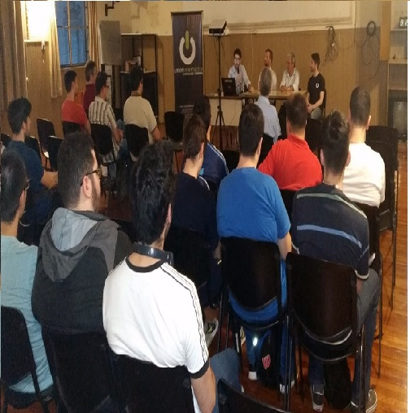

QUIENES SOMOS
- La pandemia del Covid-19 ha generado una de las mayores crisis en la historia de la humanidad. El virus provocó casi 3 millones de fallecidos y una contracción de la economía mundial, que, según el Banco Mundial, se reducirá un 5.2%, entre otras tantas consecuencias sociales. Las tecnologías de la información y comunicación (TICS), han irrumpido de manera signi¬ficativa en las sociedades, modificando actividades, procesos, relaciones y oportunidades de inclusión. Pero, la tecnología puede ser una fuente de desigualdad al momento de hacer uso de todos sus beneficios, a causa de una mala y desorganizada implementación.
- La plataforma es de ámbito privado, aconfesional y sin ánimo de lucro, que nace a mediados de 2021 con el propósito de contribuir a la mejora social, al desarrollo de la persona y disminuir la brecha digital (que afecta a casi la mitad de los habitantes del planeta —alrededor de 3.600 millones de personas—que no tiene siquiera acceso a la red), el acceso, uso y calidad de uso de las TICS (tecnologías de la información y la comunicación) y con ella, mejorar el flujo y manejo de la información a nivel internacional en el ámbito público y privado tanto como para ayudar a la prevención de futuras crisis sanitarias, oportunidades laborales e inserción en el sistema mediante programas de alfabetización digital.
- Nuestro plan implica una presencia continuada en el terreno, que nos permita poner en marcha proyectos de largo plazo en colaboración con organizaciones no gubernamentales locales, confederaciones, federaciones y redes estatales, Coordinación de campañas que incentiven la participación de la “comunidad IT” en el ámbito de la acción social y la cooperación de las ONG, para genera cambios sociales. A su vez lograr el reconocimiento de “fondo” de la ONU y trabajar bajo su supervisión, para ayudar directamente a lograr los propósitos de la organización, dado que en sus Objetivos de Desarrollo Sostenible (ODS 9) está presente la reducción de la brecha digital.
Objetivos
Brindamos información sobre prevención y cuidados de crisis sanitarias y generamos un blog como espacio de debate para replantear sistemas económicos, como aumentar la accesibilidad, mejorar y actualizar los sistemas educativos y como acercar las nuevas oportunidades laborales que podría presentar el desarrollo de la tecnología en los países menos desarrollados.
La creación del fondo regulado pora la onu denominado unIT para la compra, producción e implementación de Herramientas y procesos para acceder, recuperar, guardar, organizar, manipular, producir, intercambiar y presentar información por medios electrónicos; incluyendo hardware, software y telecomunicaciones en la forma de computadores y programas tales como aplicaciones multimedia , sistemas de bases de datos, programas de alfabetización digital (vinculados con la educación para adquirir habilidades digitales) para los habitantes de las zonas menos favorecidas en el uso de Internet para mejorar su bienestar personal.


Alianzas comerciales con diferentes empresas, y portales de empleo, para emplear a la gente capacitada con nuestros programas de alfabetización digital, porque creemos que la mejor manera de ayudar a la gente a superar las barreras educacionales y laborales es hacerlo en conjunto, como una comunidad, para poder proporcionarles herramientas útiles para poder trabajar teniendo en cuentas las demandas del mercado laboral actual.